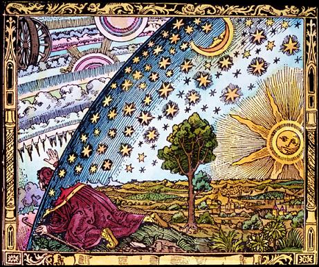

Copyright Michel Galiana 01.04.2006 (c) (r) All rights reserved |
Transl. Christian Souchon 01.04.2006 - 2026 (c) (r) All rights reserved |
Notes
|
Voici comment une interprétation possible ce poème : Réflexions suscitées par la contemplation d’un ciel étoilé : 1. Le regard décrit un arc, passant d’une zone illuminée par des corps célestes (« éblouissement ») à une région sombre (« chaudron ») — apparemment vide, mais pourtant emplie de temps (« éternité ») et d’une lumière provenant d’étoiles disparues depuis longtemps (« mirage d’un ciel mort »). 2. Une digression : la comète (*komē* en grec, signifiant « chevelure ») — figure d’une femme, dont une étoile fait office de « pagne » pour contenir l’imagination du poète. 3. Le poète envie l’astronome, qui appréhende le cosmos par le biais de calculs. 4. La présence du temps au sein de ce tableau ; il exerce son influence aussi bien sur le cosmos lui-même que sur l’observateur, qui en contemple une image déformée. Il est rare que Michel exprime une quelconque frustration vis à vis des "matheux"! |
Here is an interpretation of this poem: Reflections inspired by the sight of a starry sky: 1. The gaze traces an arc, moving from an area illuminated by celestial bodies (“dazzlement”) to a dark region (“cauldron”)—seemingly empty, yet filled with time (“eternity”) and light arriving from long-dead stars (“mirage of a dead sky”). 2. A digression: The comet (*komē* in Greek, meaning “hair”)—an image of a woman, with a star serving as a “loincloth” to rein in the poet’s imagination. 3. The poet envies the astronomer, who grasps the cosmos through calculations. 4. The presence of time within this tableau; it exerts its influence as much upon the cosmos itself as upon the observer, who beholds a distorted image of it. It is rare for Michel to express any frustration toward "math people!" |